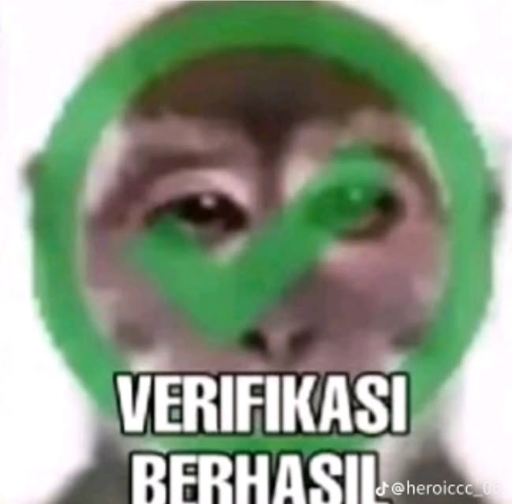
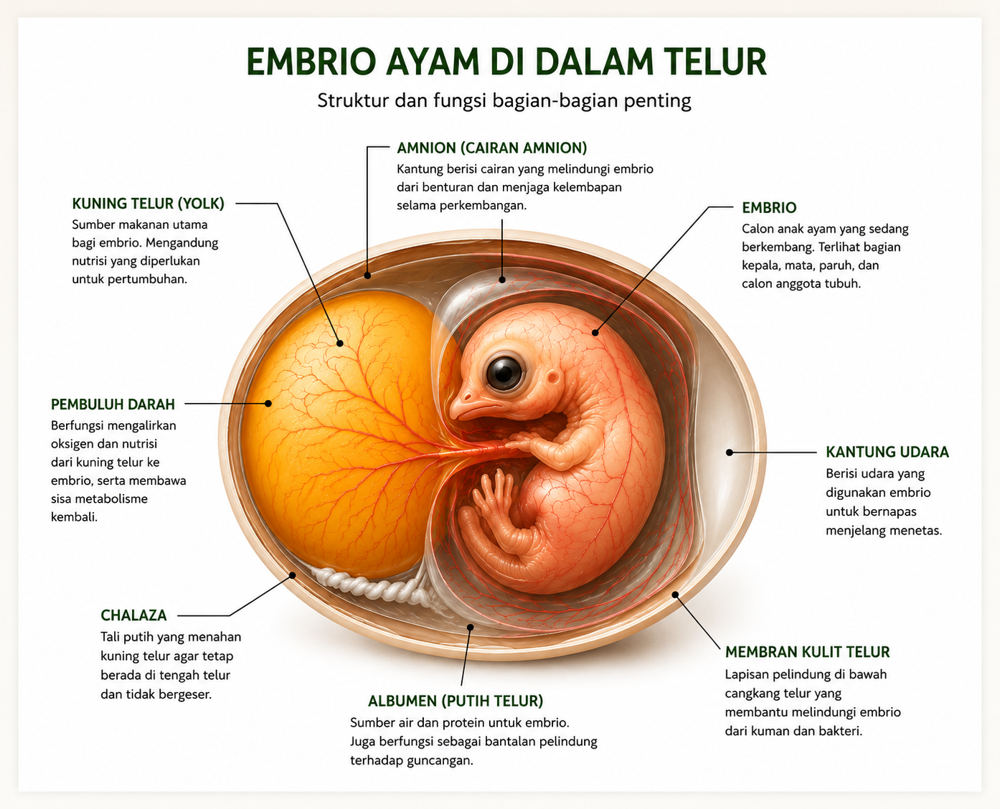
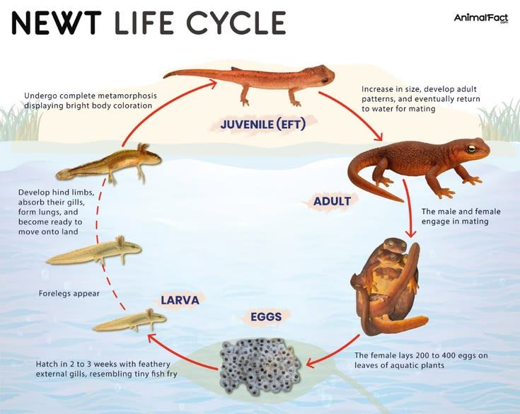
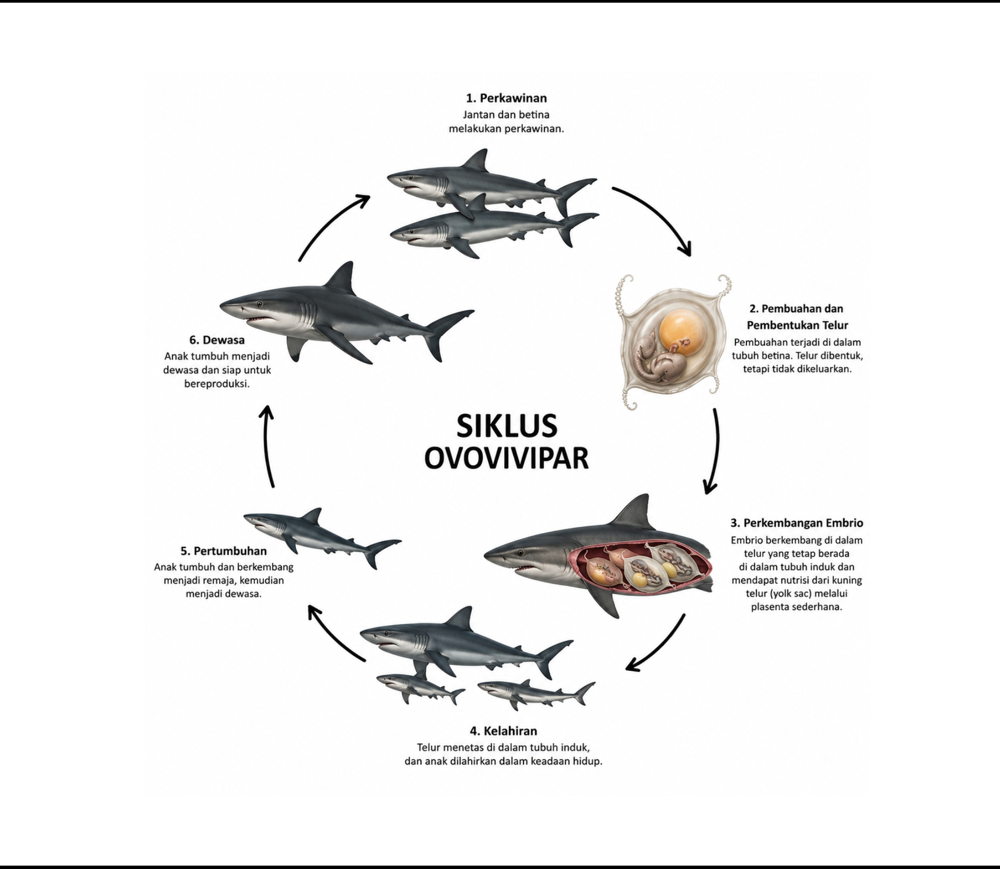
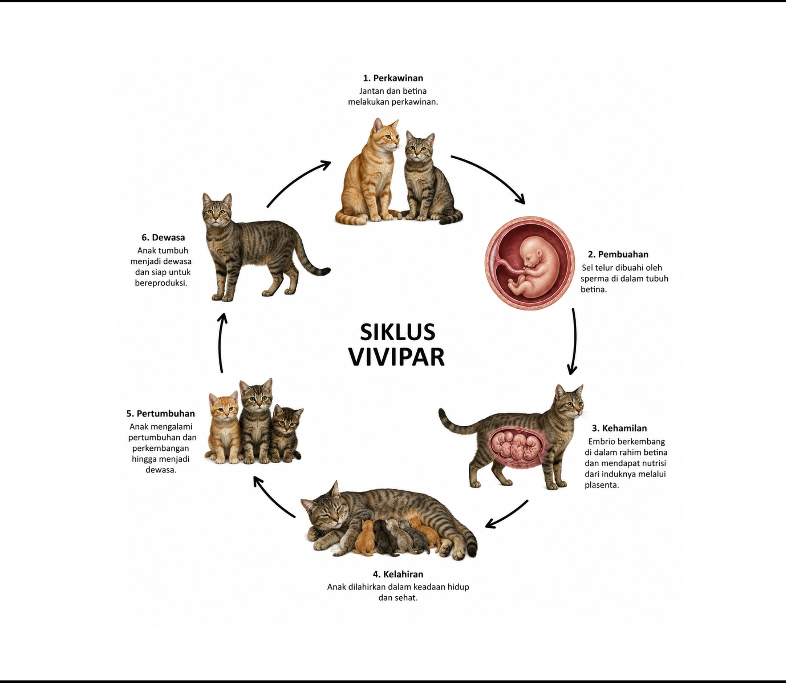

Pengertian Hewan
Hewan adalah makhluk hidup yang memiliki kemampuan bergerak secara aktif, membutuhkan makanan dari makhluk hidup lain (heterotrof), bernapas, tumbuh, berkembang, berkembang biak, serta peka terhadap rangsangan. Hewan tidak dapat membuat makanan sendiri seperti tumbuhan.
- Makhluk hidup
- Bergerak aktif
- Tidak membuat makanan sendiri (heterotrof)
- Bernapas
- Tumbuh dan berkembang
- Berkembang biak
- Peka terhadap rangsangan

Embrio
Setelah sel telur dibuahi oleh sel sperma (fertilisasi), terbentuklah zigot yang terus membelah dan berkembang menjadi embrio. Embrio adalah tahap awal perkembangan individu baru sebelum tumbuh menjadi bentuk yang menyerupai induknya.
- Zigot — hasil peleburan sel telur dan sperma
- Morula — pembelahan zigot menjadi kumpulan sel padat
- Blastula — terbentuknya rongga berisi cairan
- Gastrula — terbentuknya lapisan-lapisan embrio
- Organogenesis — pembentukan organ-organ tubuh
- Janin — embrio menyerupai bentuk individu dewasa

Perbandingan Cara
Berkembang Biak Hewan
Ovipar (Bertelur)
Hewan ovipar adalah hewan yang berkembang biak dengan cara bertelur. Embrio berkembang di dalam telur yang berada di luar tubuh induknya hingga menetas. Cadangan makanan embrio berasal dari kuning telur, sehingga pertumbuhannya tidak bergantung langsung pada tubuh induk setelah telur dikeluarkan.
- Ayam
- Burung
- Bebek
- Penyu

Ovovivipar (Bertelur & Beranak)
Hewan ovovivipar berkembang biak dengan cara bertelur dan melahirkan. Telur terbentuk di dalam tubuh induk dan tidak dikeluarkan ke luar. Embrio berkembang di dalam telur dengan memanfaatkan cadangan makanan dari kuning telur. Setelah menetas di dalam tubuh induk, anak kemudian lahir dalam keadaan hidup.
- Hiu
- Ikan Pari
- Kadal
- Ular Boa

Vivipar (Beranak)
Hewan vivipar adalah hewan yang berkembang biak dengan cara melahirkan. Embrio berkembang di dalam rahim induk dan memperoleh nutrisi melalui plasenta. Setelah pertumbuhan sempurna, anak dilahirkan dan biasanya dirawat oleh induknya hingga mampu hidup mandiri.
- Kucing
- Sapi
- Gajah
- Kambing

Bagaimana Hewan Berkembang
Tanpa Metamorfosis (Ametamorfosis)
Hewan muda menetas dengan bentuk yang sudah menyerupai induknya. Tidak ada perubahan bentuk tubuh yang mencolok, hanya bertambah besar seiring waktu.
- Telur menetas menjadi anak hewan
- Anak hewan tumbuh membesar
- Berkembang menjadi hewan dewasa
- Ayam
- Itik
- Burung